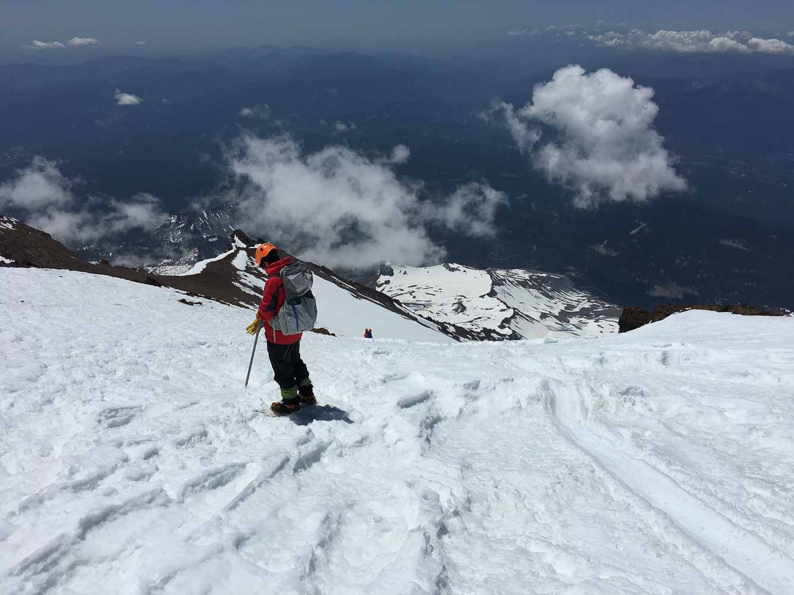

Backpacking
Been out and about in the Sierra (and some lesser regions) since I was 11! Here are the major trips:- Emigrant Wilderness (August '14)
- Minaret to Ediza Lake (July '15)
- Emigrant Wilderness (September '15)
- Big Sur (January '16)
- Echo Lake and Sabrina Basin (June '16)
- Twenty Lakes Basin (September '16)
- Yosemite Valley (June '17)
- Northern Tier, Boundary Waters in Minnesota (June '17)
- Twenty Lakes Basin (September '17)
- Yosemite Valley (December '17)
- Big Sur (April '18)
- Kings Canyon - Sphinx Pass, Cinder Col, Longley Pass, Lake Reflection (August '18)
- Bear Lakes Basin (September '18)
- Yosemite Valley (December '18)
- Castle Peak (April '19)
- Philmont Scout Ranch, NM (July '19)
- Snow Creek, Tenaya Lake, Clouds Rest (September '19)

Me and my friend Jeffery at Happy Isles!
Useful Links:
- California Snow Water Content (daily update) (by region)
- California Snow Water Content (daily update) (pdf plot against previous years)
- NOAA snow data (3D .kmz files)
- Tuolumne Meadows Winter Blog (biweekly update)
- My planning guide (Google Document)
Climbing
I got into climbing a bit more recently, nothing hard core though...- Mt. Dana (May '18) [summitted]
- Mt. Shasta (June '18) [did not summit]
- Mt. Shasta (June '19) [summitted]

Richard on Mt. Shasta below Misery Hill

{kind=link}